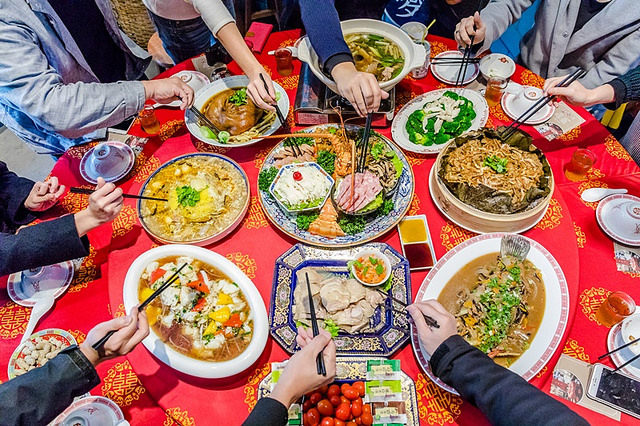
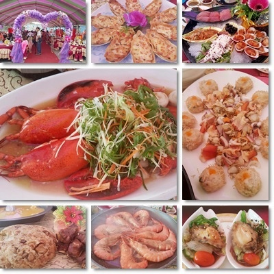

南北辦桌大不同
有關辦桌的種類及菜色每一個地方都有不同的特色，菜色的挑選及口味，
也都反映了當地的飲食文化，比方說在北部筵席的口味比較偏鹹一點而南部尤其是台南就比較偏甜的口味，
如果有些地方接近海口就會比較有豐富的海鮮，
如屏東的潮州東港，那邊的菜色幾乎已海鮮為主，但現很多人都在飯店宴客在這方面就比較已港式為主。
一般來說傳統的菜色都已經被改良的比較合乎現代人的飲食習慣，
從以前的大碗大盤到現在個人式的設計,也顯示了飲食文化的改變。
說到大盤大碗的囍宴，表姊遠嫁澎湖，我們到澎湖才見識到什麼較大盤大碗的宴客，
澎湖人大多是討海人生性好客大方。端上桌的盤子是台灣喜宴盤子的3倍大；
盤子大食物也大，平常我們在台灣吃的蚵、九孔類的2倍大，連宴客的甜點統一布丁也是最大號SIZE。
連到第一頁
連到第2頁
連到第3頁
連到第5頁